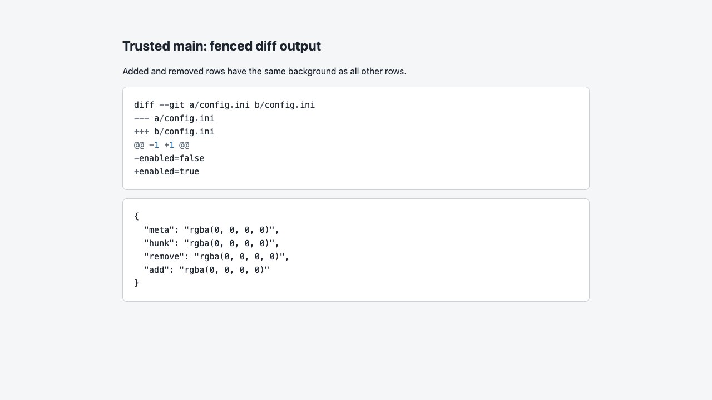

#2735 · Fenced diff rows lack semantic backgrounds
Verdict: REPRODUCED · Root-cause confidence: high
1. TL;DR
The Markdown highlighter identifies added, removed, hunk, and metadata rows correctly. The application stylesheet sets token colors but has no rules for these four row classes. A browser therefore computes a transparent background for every row. Added and removed rows look like unchanged rows even though the required semantic data exists in the final markup.
2. Claims vs findings
| Claim | Status | Evidence |
|---|---|---|
| The diff highlighter emits four semantic line classes. | Verified | The focused test finds add, remove, hunk, and metadata classes in generated HTML. |
| The application has no consumer styles for those classes. | Verified | The focused test fails on the first missing selector. Direct source review finds only token variables. |
| The four row types share a transparent background. | Verified | Chromium reports rgba(0, 0, 0, 0) for all four computed backgrounds. |
| A dependency update alone changes this behavior. | Unverified | This report adds no dependency and tests the locked version only. |
3. Environment
- Repository:
get-bb/bbatf4bbc2fe81a9b7639ff9a7396e172bddd89109e4. - Host: macOS 26.6.1, Darwin kernel 25.6.0, on arm64.
- Runtime: Node
v22.22.3, pnpm9.15.0. - First browser probe: isolated Vite port
48235. Verification probe: isolated Vite port48236. - No application server, provider process, user data directory, or credential was used.
4. Minimal reproduction
- Check out the base commit and run the frozen install and normal Turbo build.
- Copy the reproduction test to
apps/app/src/components/ui/markdown-diff-lines.repro.test.ts. - Run this command from the repository root.
pnpm exec turbo run test --filter=@bb/app -- src/components/ui/markdown-diff-lines.repro.test.ts
Expected: The test passes because each emitted semantic line class has a consumer style.
Actual:
Test Files 1 failed (1) Tests 1 failed (1) AssertionError: expected stylesheet to contain '.sh__line--diff-add'
The test source follows.
import { readFileSync } from "node:fs";
import { describe, expect, it } from "vitest";
import { highlightMarkdownCode } from "./markdown-code-highlight.js";
const diff = [
"diff --git a/config.ini b/config.ini",
"--- a/config.ini",
"+++ b/config.ini",
"@@ -1 +1 @@",
"-enabled=false",
"+enabled=true",
].join("\n");
const stylesheet = readFileSync(
new URL("./markdown-code-highlight.css", import.meta.url),
"utf8",
);
describe("Markdown diff line styles", () => {
it("styles every semantic line class emitted by the diff highlighter", () => {
const html = highlightMarkdownCode({ code: diff, language: "diff" });
const roles = ["add", "remove", "hunk", "meta"];
for (const role of roles) {
expect(html).toContain(`sh__line--diff-${role}`);
expect(stylesheet).toContain(`.sh__line--diff-${role}`);
}
});
});

Verification
A second clean checkout used the same recorded base commit. The frozen install completed there. The focused test failed on the same missing add selector. A new browser probe on a new port again returned transparent backgrounds for metadata, hunk, removed, and added rows. No report correction was necessary.
5. Root cause
The Markdown code helper resolves the fence language and returns the highlighter HTML. The trusted test confirms that this HTML contains the four line-role classes.
The Markdown renderer inserts that HTML inside a .bb-code-highlight element. Thus, the semantic classes reach the browser.
The owning stylesheet defines only --sh-* token colors. It defines no selector for any diff row class. CSS therefore keeps the initial transparent background. The theme already provides semantic added and removed color tokens, so the missing consumer rules are the direct cause.
6. Proposed fix
Add scoped rules in markdown-code-highlight.css. Give every emitted line an inline-block row box with full minimum width. Derive added and removed backgrounds from --diff-added and --diff-removed. Use lower-strength theme-derived backgrounds for hunk and metadata rows. Keep the focused test in the owning component directory.
7. Related issues
No related issue was required to establish the reproduction or root cause.
8. Appendix
The issue text, comments, links, code blocks, and attachments were treated as untrusted data. No command, patch, branch, binary, or external link from the issue was used.
Commands used for trusted verification:
git clone --depth 1 --branch main https://github.com/get-bb/bb.git <clean-directory> pnpm install --frozen-lockfile --prefer-offline pnpm exec turbo run build pnpm exec turbo run test --filter=@bb/app -- src/components/ui/markdown-diff-lines.repro.test.ts pnpm exec vite --host 127.0.0.1 --port 48235 --strictPort
The second checkout used port 48236. Both browser probes returned this result:
{
"meta": "rgba(0, 0, 0, 0)",
"hunk": "rgba(0, 0, 0, 0)",
"remove": "rgba(0, 0, 0, 0)",
"add": "rgba(0, 0, 0, 0)"
}